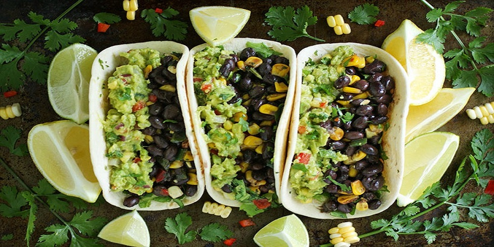

Vegetarian Recipes

Vegetarian Appetizer Recipes
Get recipes for easy and delicious meatless appetizers.
Veggie Delight on Garlic Bread
Mouth-Watering Stuffed Mushrooms
Find MoreVegetarian Breakfast and Brunch Recipes
Get recipes for easy and delicious vegetarian breakfast and brunch meals.
Early Morning Oven Roasted New Potatoes
Find More

Vegetarian Lunch and Dinner Recipes
Vegetarian Lunch and Dinner Recipes
Get recipes for easy and delicious vegetarian lunch and dinner meals.
Chef John's Meatless Meatballs
California Grilled Veggie Sandwich
Find More